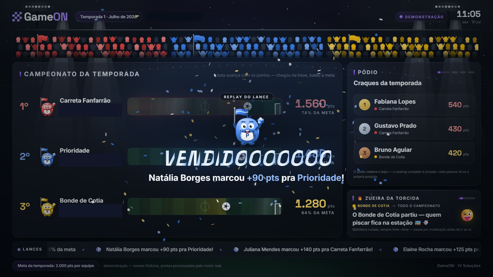
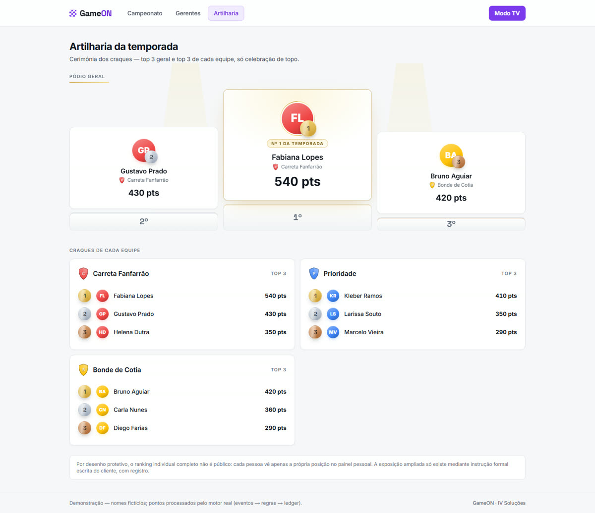

Sistemas · 6 registros
Construídos para operações que não podem parar.
Cada ficha traz o problema real, o que roda hoje e um fato técnico verificável. Telas sempre com dados fictícios ou sintéticos — nunca dado de cliente.
SIS-001 · GESTÃO HOSPITALARSIEM — Excelência Médica
Gestão de excelência para a operação de saúde
Em produção
O problemaExcelência de operação hospitalar medida por achismo.
O que rodaÍndice de excelência de 0 a 100 por competência, ordens de serviço e indicadores no navegador da gestão.
Por trásMetodologia versionada por vigência: mudar a régua hoje jamais recalcula o passado. Histórico imutável por doutrina.
Sistema com dado clínico sensível — a tela de demonstração (dados fictícios) está em preparação e entra aqui quando aprovada. Nenhuma tela com dado real será publicada.
SIS-002 · CONDOMÍNIOIV Home
Condomínio digital — morador e síndico
Em produção
O problemaCondomínio administrado por papel, mural e grupo de WhatsApp.
O que rodaApp do morador — ouvidoria, reservas, O.S., comunicados — e painel do síndico, com push no celular.
Por trásIsolamento por condomínio imposto no nível do banco (RLS): a regra vale mesmo se a aplicação errar.
Tela de demonstração com unidade fictícia em preparação. Dado de morador jamais aparece nesta página.
SIS-003 · PONTO MÉDICOChronoMed
Ponto e escalas para equipes médicas
Em produção
O problemaPlantão médico sem prova objetiva de presença.
O que rodaRegistro de ponto biométrico com localização e escala de plantões — do celular ao relatório da gestão.
Por trásValidação de localização no ato do registro e trilha de auditoria de cada batida.
Tela de demonstração com equipe fictícia em preparação.
SIS-004 · IA CORPORATIVAÓrion
IA sobre o conhecimento da empresa
Em produção
O problemaO conhecimento da empresa preso em PDFs que ninguém acha.
O que rodaAssistente de IA que responde com os documentos internos da operação — catálogo, norma, procedimento.
Por trásBusca semântica sobre a base da própria empresa (RAG), medida contra um conjunto-ouro antes de cada mudança.
Em breve nesta página: converse com uma versão do Órion treinada nos materiais públicos da IV.
SIS-005 · LICITAÇÕES E EMPENHOSPainel de Empenhos
Compras públicas sob controle
Em produção
O problemaLicitações e empenhos controlados em planilhas paralelas.
O que rodaPainel único de empenhos e pedidos com indicadores em tempo real — da mesa do gestor à TV da operação.
Por trásLinguagem visual própria de TV corporativa, com contraste de acessibilidade verificado a cada build.
Tela de demonstração com fornecedores fictícios em preparação.
SIS-006 · GAMIFICAÇÃO DE VENDASGameON
O primeiro título do IV Games
Em construção
O problemaMeta de vendas que ninguém vê — e ninguém vibra.
O que rodaCampeonato entre times com placar em TV de estádio, moeda interna e loja de prêmios.
Por trásMotor de pontos versionado por vigência e razão contábil de dupla entrada: nada some, nada duplica.
ivREG-01GameON — modo TVDEMO

↑ TV de estádio — dados fictícios, motor real.
ivREG-02GameON — pódio da temporadaDEMO

↑ Pódio — celebração de topo; ranking completo privado por desenho.
O GameON vive na divisão de jogos da casa — conheça o IV Games →